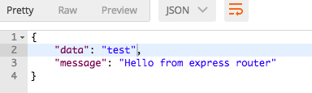

Minimalist express/typescript clean boilerplate
- This is an express boilerplate based on TypeScript, you can clone it and start coding
- Cover SOLID principles
What this includes?
- TypeScript compiler
- Express
- Nodemon watcher (hot reload)
- Active sourcemap for debugging
- TS-lint
- ES6 support
- Mongoose ORM
- MongoDB connection
- Multiple env
- Standard API response
- Middleware configurations
- Basic CRUD
How to start?
- Clone the repo
git clone https://github.com/binaryk/node-ts-boilerplate.git cdto the working directory- Run
yarnornpm install - Run
npm install -g tsc(to install globally typescript transpiler) - Install MongoDB and run it (
mongod) - Run
npm watch- to watch your file updates - Open postman and try
GET: http://127.0.0.1:3000/sample, you will receive:  - Add your MongoDB configuration in
src/config/database.ts - Add your own routes in
src/routes - Add your own controllers in
src/controllers - Add your own models in
src/models - Enjoy development
Config
Database
config/database.tsis the configuration file for the database - Default mongo arguments are stored there
Core
- You can leave the black box of the core to configure your application, based on your defined routes and middlewares from the
config/middlewares.ts - middleware object, or, you can do this manually in theapp.ts:
this.core = new Core(this.app, {
/**
* Activate global middlewares from the `config/middeware.ts`
*/
globalMiddleware: false
});
this.core.use(bodyParser.json());
// this.core.use(/* other middleware function */)
/*!important, init routes*/
this.core.initRoutes();
Standard Response object
- API has a customizable monkey patching, which extends the default
resexpress object with a new functionrespond. This is useful to have aStandard API Responsewith the format:
data: data,
message: message,
responseCode: responseCode
- To use this standard it's enough to write:
this.router.get('sample', (req, res, next) => {
res.respond({
foo: 'Standard data from API',
}, `Standard message from API`, 201 )
});
Response from the server:

Group routes and define middleware
- For CRUD
contactinstance you can use thegroupwrapper - Add prefix with middleware keys to the routes group like this:
- For CRUD
this.router.group({
prefix: 'contact',
middleware: ['session', 'auth:admin']
}, (router) => {
router.post('', this.contactController.store);
router.get(':contactId', this.contactController.getContactWithID);
router.get('', this.contactController.getContacts);
router.post('', this.contactController.store);
router.put(':contactId', this.contactController.updateContact);
router.delete(':contactId', this.contactController.deleteContact);
})
Add custom middleware
I. You have two options to define a middleware:
- to declare callback function directly:
foo: (req, res, next) => {
console.log('First middle');
next();
},
- Add your file with middleware in
/src/http/middleware* - Bellow we have an example of an empty middleware:
export class Authenticate {
constructor () {
}
public handle(req, res, next) {
console.log('Authenticate middleware - check if is authenticated');
next();
}
}
| ⌘ | The handle method is required!
II. Declare it in src/config/middleware.ts
export const routesMiddleware = {
auth: Authenticate,
session: (req, res, next) => {
console.log('Local definition');
next();
}
};
III. In the Route definition, just add the key of the middleware, like this:
this.router.group({
middleware: 'auth'
}, (router) => {
Array of middlewares:
middleware: ['auth', 'session']
IV. Define these two middlewares in a middleware group:
export const groupsMiddleware = {
web: [
StartSession,
Authenticate
]
};
And use it like:
prefix: 'group',
middleware: 'web'
}, r => {
V. Send arguments to the middleware functions from the definition:
this.router.group({
prefix: 'group',
middleware: 'auth:admin,user'
},
- Now I can get my arguments as an array like: ['admin', 'user'] in the
authmiddleware, BUT, there you should implementhandlefunction, which returns an middelware signature
public handle(args) {
return (req, res, next) => {
console.log(args, 'Encapsuleted arguments from the route');
next();
};
}
Add global middlewares
- In
config/middlewares.tswe have an object for global middleware definitions, allowed format are:
- Class with an handle function
- Simple callback function
- Array of callback functions
export const middleware = {
bodyParser: [
bodyParser.json(),
bodyParser.urlencoded({ extended: false })
],
application: Application,
foo: [(req, res, next) => {
console.log('First middle');
next();
}, (req, res, next) => {
console.log('Second middle');
next();
}]
};
Use express router as default
- In your route definition just use it through
this.router:
this.router.get('/sample', (req, res, next) => {
res.json({
'data': 'test'
});
});
Questions
The issue list of this repo is exclusively for bug reports and feature requests. Feel free to open a PR of issue.
Stay In Touch
License
Copyright (c) 2018-present, Binaryk (Eduard) Lupacescu